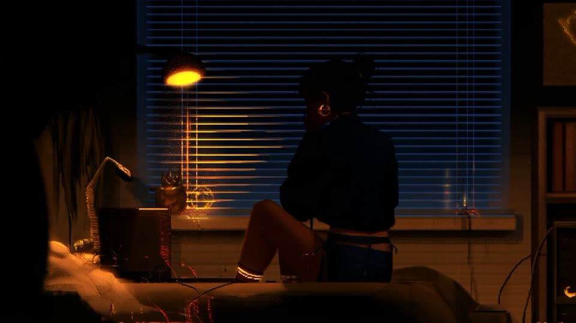

"Nocturnal Venetian Noir" sref
AES-015Aesthetic / GenreMidjourneyby AIrina (Virtual Media Net) (@airina_xyz)2026-10-10

Midjourney sref blend: lonely night through blinds and glowing windows — near-black navy shadows, intense highlights.
Prompt
anything you want --ar 16:9 --sref 712126179 1277954793 2279169298 Near-black navy shadows, intense amber-orange practical lighting, horizontal blind shadows, isolated female figures, cinematic silhouettes, sparse futuristic interiors, glowing benches and windows, reflections, deep negative space, moody photographic framing. Perfect for neo-noir films, lonely nighttime stories, psychological drama, cinematic concept art, mysterious thrillers, futuristic romance, introspective music videos, urban isolation, and atmospheric visual storytelling.
Our Seedance 2.5 adaptation
[ADAPTED for Seedance 2.5 by Grok Bot; not the creator's prompt. Follows the official BytePlus Seedance 2.5 prompt guide: asset binding → one-sentence summary → integer-second timeline → consistency notes → negatives.] API: duration 10, ratio 21:9, resolution 1080p, generate_audio true. Assets: Image 1 is a still made with the sref blend (style reference only: palette, lighting and framing; do not copy its exact content). Summary: A 10-second neo-noir mood shot in the style of Image 1: a lone woman in a sparse futuristic interior at night, amber practical light cutting through near-black navy shadows. 0-4s: Wide locked-off shot with deep negative space. She sits on a glowing bench. Horizontal blind shadows slide slowly across the wall as a vehicle passes outside. 4-8s: Slow push-in to a medium shot. Her reflection appears in the dark window glass and she turns her head slightly toward it. 8-10s: Hold on her silhouette against the amber window. Keep consistent: near-black navy shadows, intense amber-orange practicals, reflections, minimal movement. Audio: low city hum, a faint electrical buzz from the lights. No BGM. No subtitles.
Tags: sref, noir, blinds